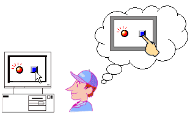
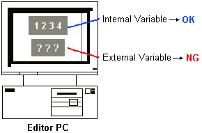
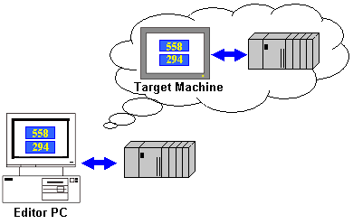
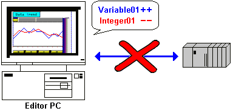

|
|
|
|
|
|
|
|
After you validate the project, you can start simulation, which mimics runtime operations.
Using simulation, you can run visual tests and device address tests on the editor PC without having to connect a target machine or equipment.
Use simulation to check the operation of parts and animated objects. For example, you can confirm if a lamp turns ON when a switch is touched.


Using simulation, you can test only a portion of the runtime operations. After using simulation to test the project, download and confirm runtime operations on the target machine itself.
To test function keys at simulation, use the function keys on your PC keyboard.
The following operations are not available in simulation.
You cannot use data logging to record variable values.
You cannot run historical trend graphs.
You cannot back up alarms and trend graphs.
You cannot print alarm messages.
You cannot simulate indirect addresses.
Hardware blink, defined in the Property Inspector, does not work in simulation. Hardware blink has a fast, medium, and slow speed setting.
Animation blink, usually defined in object dialog boxes or color resources, does work in simulation. Animation blink only has fast and slow speed settings.
If simulation fails to start, files from previous projects may be interfering with the build. See Error 1865.
Simulation can run for one hour. After the hour elapses, a message box notifies the user that simulation has ended.
You can mimic the graphical display of the target machine by using the Simulation command. Run touch operations by clicking switches, touch animated objects, and data inputs. Simulation also runs scripts set up in the user application.
This form of simulation is possible without connecting the equipment.


If an external variable is used on the panel, it causes the display of an error. To simulate equipment addresses, either connect the equipment directly to the editor PC, or use Device Simulation (see Section 25.3.2 Simulating Device Addresses).
You can connect the equipment directly to the editor PC, which can then be used to simulate the target machine. Using this method, you can simulate communications between the target machine and the equipment. This simulation method is the closest to actual runtime operations, as it simulates communications between the target machine and the equipment, and also allows the running of the ladder program on the equipment.

If you do not have the physical device or the driver is not supported for simulation in Windows, you can simulate device addresses. For more information, see Simulating Device Addresses. For more information on the drivers that are not supported in Windows targets and cannot be simulated in buildtime, see Appendix 4, Run-time Specifications.
 Simulating Device Addresses
Simulating Device Addresses
You can mimic device addresses by simulating changes in variable values. Without having to connect the equipment, you can set up variables so they automatically change their values.

You can connect to the editor PC with a tablet using Vijeo Design'Air when simulating the target machine; however, the touch action may not work properly.